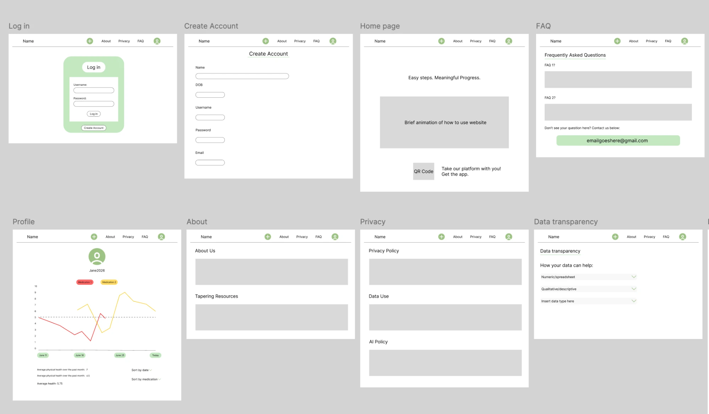
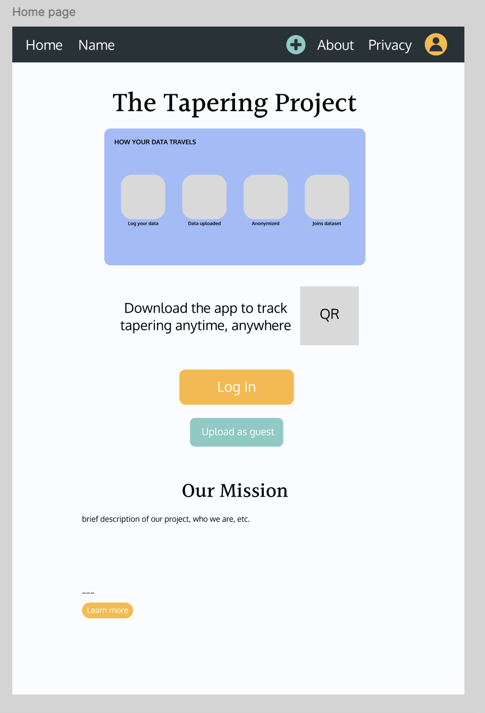
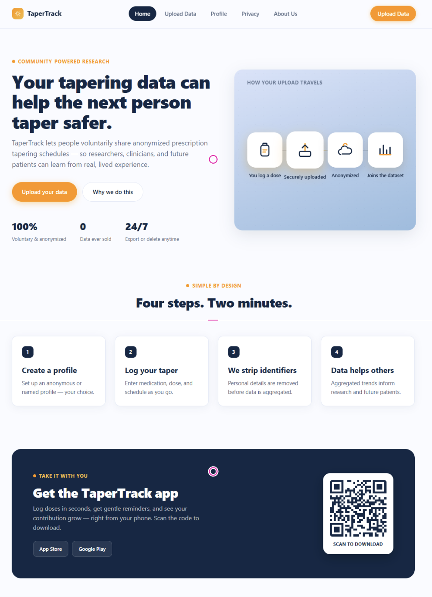
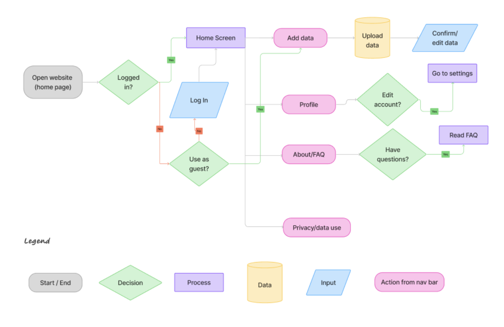

Inner Compass Initiative
Provides those tapering with information about how to prepare, safely taper, and survive withdrawal.
A UW PHD candidate brings together researchers, designers, and developers to create two products for her dissertation: an app to track tapering progress, and my project, a citizen-science platform to collect data from tapering patients.
Context
Tapering is the process of gradually reducing the dosage of a psychiatric medication. It is an extremely difficult and often isolating process as patients battle a range of withdrawl symptoms. It is underresearched, and patients are often provided with little guidance and resources from doctors or medical professionals.
Due to a lack of resources or process for tapering, patients often use a series of disparate tools to track their progress. These can range from handwritten journal entries, to spreadsheets and AI chat logs.
Research
The PHD candidate managing our team had already run a series of interviews and surveys with tapering patients. We now needed to use that data to decide on features and functionality for our platform.
We looked into existing websites, apps, and support forums, and identified where they fell short.
Provides those tapering with information about how to prepare, safely taper, and survive withdrawal.
A patient-led website providing peer support for those tapering, containing FAQs, and spaces for patients to discuss their experiences.
A platform for patients to anonymously track their symptoms, treatments, medications, and side effects, simultaneously collecting data about hundreds of medical conditions.
From current solutions, we found that there are no available platforms that process and store existing user tapering data. Many platforms provide support for patients beginning tapering, not for those in the process.
Design
In our first design iteration we came up with as many possible features as we could, and narrowed and combined them as we saw fit. From the start, we wanted to emphasize data transparency to encourage trust and voluntary user participation.


Through simple design and a walkthrough on the home page, we designed the website with a range of tapering patients in mind: from young, tech-savvy adults, to older individuals who may be less familiar with digital platforms.


All pages are accessible from the home screen so users can navigate as easily as possible.
Development
Once the design was finalized, development was straightforward. I used Supabase to build the backend.